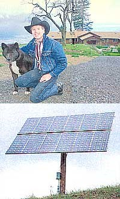
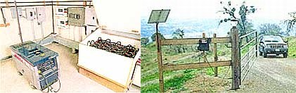
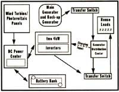

Energy and Environment
A California rancher becomes his own utility.
I met Terry Montgomery for the first time one mid-summer afternoon in 1993. Terry and his wife Taffy were looking into purchasing remote land in Mendocino County and had an idea that they might want an alternative approach to their energy needs. I am always interested in the way a person's interest in renewable energy evolves. An event sometimes provides a new perspective on the way things are done. Terry put it this way: "I once served as the chief of staff for the governor of Minnesota. During that time a tremendous groundswell of resentment rose up from the normally soft-spoken inhabitants of rural Minnesota when the utility began to run a 400kW powerline across the land. The National Guard had to be called out. This made me ponder the choices between energy consumption and the environment."
"I was raised on a cattle ranch in a remote part of South Dakota where we had no electrical power. In my adult life, I took electrical power as a given, but my upbringing allowed me to face the prospect of a more austere lifestyle without a lot of trepidation."
The first requirement of being a homepower troubleshooter is flexibility. There are as many individual permutations of renewable energy systems as there are people who need them. I did my best that afternoon to provide Terry with valuable information for his situation without losing him in a miasma of techno-babble. In a soft-spoken conversational manner, he would first ask an intelligent question, then play out a fair amount of rope. I could then try and tie a pretty knot with it, or hang myself. This went on for about two hours. At the end of our conversation, we went our separate ways on amicable terms, with me wondering if I had left Terry a baffled and unlikely client, a more informed but still unlikely client, or a very informed but still unlikely client, or a very informed and very likely client. Either way, I felt brain-picked. Over the next few months, Terry called or stopped by for more information, which ultimately resulted in a rough quotation for an energy system large enough to handle the rigors of a full working ranch.
Taffy had run a successful equestrian business when she and Terry lived in Minnesota, and her love of horses meant they would need some real open space for their animals. As they toured Mendocino County in search of the right place, Taffy and Terry told me they were able to use the information I had provided to evaluate some of the installations they ran across.
Mendocino County certainly deserves recognition as one of the independent energy hubs of the world. This means that the evolution of renewable power systems has stumbled through the sometimes haphazard installation techniques of people with limited funds, ability, or understanding of what they were trying to accomplish. The early "Mendo" systems are sometimes remarkably ugly electrical systems which somehow seem to work in spite of poor installation and years of neglect. Local solar-powered homes which had a more conventional appearance and energy use patterns (rather than the more rustic, low-tech homes with kerosene lamps and cigarette-lighter outlets) gave Terry and Taffy inspiration. Terry didn't want to have a Rube Goldberg energy system, but one that would offer safety and quality in appearance and function. Armed with the conviction that a renewable energy system could satisfy his needs, he purchased Thunderhawk Ranch. 185 acres of off-the-grid heaven.
The rolling grasslands at the top end of this three-thousand-foot mountain offer tremendous vistas of Redwood Valley, Ukiah, and the surrounding mountains, as well as excellent forage for the critters. The local utility company, however, showed little interest in Thunderhawk Ranch. With no more than a few homes to service and miles of power poles to install, the cost would be prohibitive to the end user and gain little for the utility.
Terry took to heart my insistence that he would be best served by using the least electricity and ordered a Sun Frost RF-16 refrigerator. His other priorities were to carefully lay out his 3,800-square-foot ranch-style home with abundant vertical south-facing glass, and use 2 x 6 studs for his framing members, allowing ample insulation of the house shell. He also decided to add several skylights along the hallway that runs the length of the house for very effective passive lighting. Terry specified fluorescent lighting throughout the home, garage, and barn. Difficult compromises in energy efficiency were made when a 1.5 horse-power submersible pump and a forced air heating system were installed. By every appearance, this is a ranch home that offers high efficiency through thoughtful design and simple elegance.
Between the time we first outlined an energy system and the installation, Trace Engineering unveiled their new 4000W sine-wave inverter, the SW4024. This remarkable inverter provides utility-quality power, efficient battery charging, auto generator starting capacity, as well as 220V AC power when mated to a second SW4024. A pair of these inverters could easily satisfy the needs of Terry and Taffy, as well as those of any visiting guests. Energy storage is in the form of sixteen Trojan L. 16 batteries (1400 amp-hour at 24V, or about 35kWh maximum) which are housed in a hinged-lid battery enclosure.
A manual transfer switch allows Terry to select between his primary Honda 10kW diesel generator and a 5kW gasoline backup generator. A second manual transfer switch offers the ability to bypass die battery/inverter system and have the generator power die home directly.
Initially, all power was to be provided by a 10kW diesel generator running about three hours per day. The large battery bank and battery chargers built into the inverters can salt away a lot of energy to be used during the rest of die day. Terry explains his program this way. "I wanted to get tire fundamental system and then start adding renewable power sources. We chase components that would allow us to add a variety of energy sources down the road"
After a year of running the facility by generator only, Terry opted to deploy an 800W solar electric array and a small, 300W turbine. Solar has a proven track record in Mendocino County, and running a small wind turbine for a few years can prove whether one has a good wind site or not. The solar has now, been operating for three years, and the wind turbine two and a half. I recently asked Taffy how she met her energy needs these days. "We run the generator about an hour a day in the summer to top off our 10,000 gallon storage tank. Otherwise, the solar will take care of all our needs in the summer. I don' t think that a big wind turbine would he all that cost effective for us at this point. We are quite happy with die way the system operates now, although we haven't seen much sun lately!" It wouldn't be a timely article without Taffy's reference to El Niño.
Like tier husband, Taffy spent her early years without electricity. On her family's New Hampshire dairy farm, she says, "We had no electricity until the Health Department decided that we couldn't use frozen pond water to keep the milk cold. My father had to buy a generator to nun a refrigeration system, but that was always breaking down, so our electricity was intermittent at best. I never thought that I would he going back to a similar-but so different-way of life. We once again live in a fairly remote location, but with the amenities of city living."
As I got into my car to leave Thunderhawk Ranch, I took a moment to soak up the view. Tonohon. the sixteen-year-old donkey, was braying for attention. The brisk winds of March rippled the brown grass of last year with die rich new grass starring to push up from below. I reflected upon the sequence of events that had brought me to this hill. In this industry, we must have an abundance of patience. Terry had told me how annoyed he was when I fast told him that a conventional refrigerator would be bad news for a remote home. He had just bought a new one, and this was another fly in the ointment in his search for paradise. The education of the client is a long-term investment. Terry and Taffy are well on their way.
|
 Terry and Taffy's electrical power is supplied by both wind and solar renewable soirees. Even their hunt gate is powered by a wool solar module! |
 |
 |